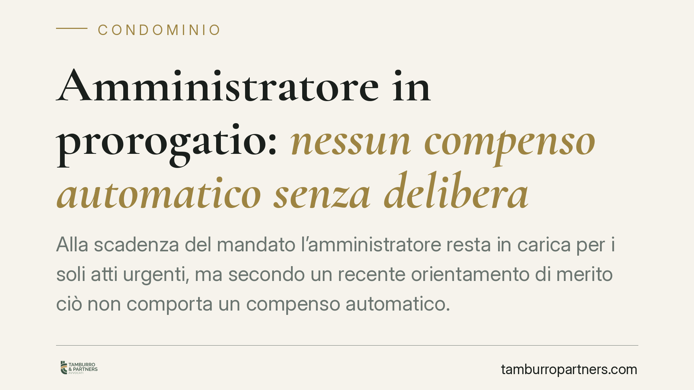

Amministratore in prorogatio: nessun compenso automatico senza delibera
Alla scadenza del mandato l'amministratore resta in carica per i soli atti urgenti, ma secondo un recente orientamento di merito ciò non comporta un compenso automatico. Senza una delibera assembleare che lo riconosca, l'attività svolta in prorogatio rischia di restare priva di remunerazione. Il tema tocca da vicino sia gli amministratori sia i condomini, chiamati a definire con chiarezza diritti e limiti del periodo transitorio.

Il caso
Alla scadenza o alla revoca del mandato, l'amministratore non cessa immediatamente ogni funzione: resta tenuto a compiere le attività urgenti necessarie a evitare pregiudizi per gli interessi comuni, nelle more della nomina del successore. È la cosiddetta *prorogatio*.
Una pronuncia di merito attribuita al Tribunale di Napoli (sent. n. 5036/2025, Sez. VI Civile) — della quale si attende conferma e pubblicazione integrale — avrebbe affrontato un punto spesso trascurato: in assenza di una delibera assembleare che riconosca un compenso per il periodo di prorogatio, l'amministratore non può pretenderlo in via automatica per la gestione degli atti urgenti e la predisposizione dei bilanci.
Il principio, se confermato, si inserisce in un filone interpretativo che valorizza la natura contrattuale del rapporto tra condominio e amministratore.
Inquadramento normativo
Occorre distinguere i piani. L'art. 1129, comma 8, c.c. disciplina gli obblighi dell'amministratore alla cessazione dell'incarico, in particolare la consegna di tutta la documentazione in suo possesso. Non è la sede che esclude testualmente il compenso per gli atti urgenti.
La regola secondo cui l'amministratore cessato deve comunque compiere le attività urgenti deriva piuttosto dall'applicazione dei principi in materia di mandato. L'art. 1710 c.c. impone al mandatario di eseguire l'incarico con la diligenza del buon padre di famiglia, e la giurisprudenza ha ricavato da tale impianto il dovere di proseguire la gestione per il solo tempo e nei soli limiti necessari a evitare danni.
Il compenso, invece, segue la logica del rapporto: l'art. 1709 c.c. presume l'onerosità del mandato, ma la misura e il titolo del compenso restano oggetto di pattuizione. Quando il mandato è scaduto e la fonte contrattuale si è esaurita, il diritto a un corrispettivo per l'attività ulteriore non è scontato: esso presuppone un atto dell'assemblea — organo competente a disporre della spesa — che lo riconosca. Si tratta di una lettura interpretativa, non di un inciso letterale di legge.
Implicazioni pratiche
Per l'amministratore uscente il messaggio è netto: continuare a operare dopo la scadenza, anche in buona fede, non garantisce la remunerazione delle prestazioni rese. Il rischio concreto è svolgere attività — talvolta impegnative, come la chiusura del rendiconto — senza titolo per essere pagati.
Per i condomini il profilo è speculare. Nessuna spesa può essere imposta senza una decisione dell'assemblea. Un compenso per il periodo di prorogatio deve essere valutato e deliberato, non subito come pretesa automatica inserita nel rendiconto.
Centrale resta la distinzione tra atti urgenti e ordinaria amministrazione. Gli atti urgenti sono quelli indifferibili, volti a impedire danni imminenti al condominio: pagamento di utenze essenziali, interventi su guasti che minacciano la sicurezza, adempimenti con scadenza perentoria. L'ordinaria amministrazione — la gestione corrente, la convocazione di assemblee non necessitate, la predisposizione del bilancio preventivo — eccede i poteri dell'amministratore in prorogatio e va rimessa al nuovo nominato.
Questa linea di confine conta anche sul piano economico: solo l'attività effettivamente urgente può fondare, a determinate condizioni e previa delibera, una pretesa di compenso.
Cosa fare in concreto
- Disciplinare il compenso già nell'atto di nomina. È opportuno prevedere espressamente cosa accade alla scadenza del mandato e se spetti un corrispettivo per la gestione transitoria.
- Convocare tempestivamente l'assemblea per la nomina del nuovo amministratore, così da ridurre al minimo la durata della prorogatio e le incertezze connesse.
- Limitare l'attività agli atti realmente urgenti, documentando per iscritto ragioni e indifferibilità di ciascun intervento compiuto dopo la scadenza.
- Deliberare in modo esplicito l'eventuale riconoscimento di un compenso per il periodo di prorogatio, verbalizzandone importo e giustificazione.
- Formalizzare la consegna della documentazione ai sensi dell'art. 1129, comma 8, c.c., per chiudere con chiarezza il rapporto e prevenire contestazioni sui rendiconti.
Un orientamento da consolidare
Trattandosi di una pronuncia di merito, è prudente attenderne la conferma e verificare l'eventuale allineamento con gli indirizzi di legittimità. Resta però fermo il principio di fondo, coerente con la disciplina del mandato: la gestione dopo la scadenza è doverosa nei limiti dell'urgenza, ma la sua remunerazione richiede un titolo, che spetta all'assemblea riconoscere.
---
Contributo informativo a cura di Tamburro & Partners - Avv. Giuseppe Tamburro. Non costituisce parere legale.
Ogni condominio ha una storia a sé.
Se gestisci un'amministrazione e vuoi un confronto su una specifica questione condominiale, scrivi allo studio. Ti rispondiamo entro un giorno lavorativo.